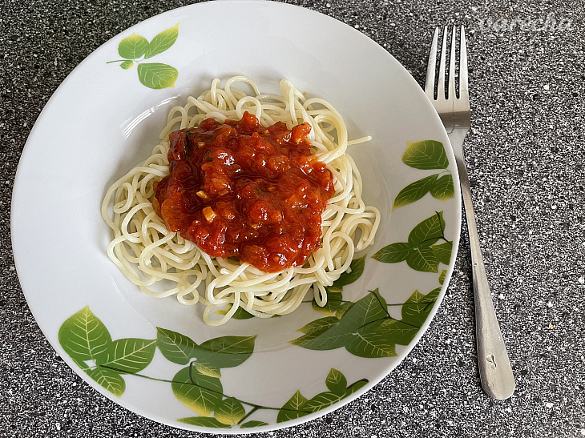
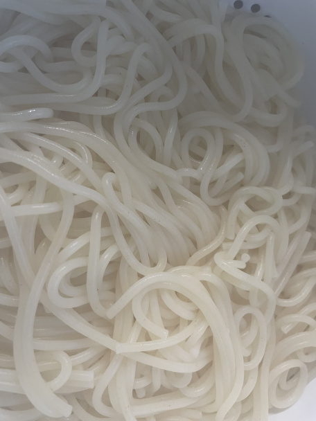
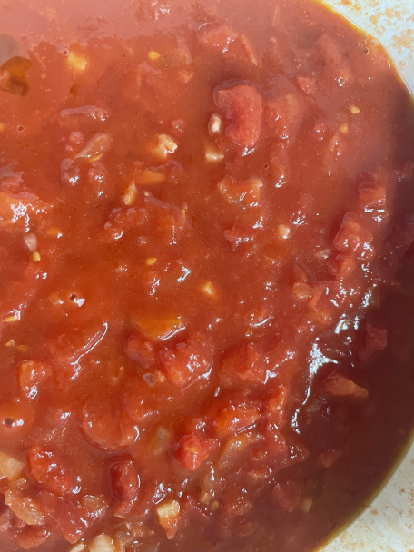

Špagety Pomodoro (s paradajkovou omáčkou)
Sú to naše najobľúbenejšie špagety, rýchlo a jednoducho hotové za pár minút.



vlastnosti receptu
- 4 porcie
- 1. porcia
- prva polovica
- druha polovica
- 2. porcia
- 3. porcia
- 4. porcia
- 15 minút príprava
- 30 minút tepelná úprava
- komentáre
Suroviny
- olej olivový 3-5 PL
- cibuľa 1 ks
- cesnak 3 strúčiky
- paradajky lúpané 6 ks (čerstvé alebo z konzervy)
- soľ
- korenie čierne mleté
- cukor kryštálový 2-3 PL (podľa chuti)
- bazalka
Postup
- Špagety uvaríme v osolenej vode bežným spôsobom. Scedené ich polejeme pár kvapkami oleja.
- Šupku na čerstvých paradajkách narežeme, paradajky vložíme na minútku do vriacej vody a následne ošúpeme. Ak požívate konzervu, paradajky by mali už byť ošúpané. Paradajky nakrájame na kocky. Nie moc veľké, ale ani veľmi veľmi drobné, aby ich bolo cítiť, inak sa rozvaria na kašu.
- Nakrájanú cibuľu orestujeme na oleji domäkka (restovanie je osmaženie na malom množstve oleja, za stáleho miešania). Potom pridáme nadrobno nasekaný cesnak, aby nezhorkol, pridávame ho až pred dokončením. Pridáme nakrájané paradajky a varíme cca 20-30 minút.
- Podľa chuti osladíme, aby sme zmiernili kyslosť paradajok. Mierne osolíme a okoreníme.
- Po dovarení, zložíme z ohňa a pridáme nasekanú čerstvú bazalku. Ak uvaríte väčšie množstvo, môžete paradajkovú omáčku sterilizovať na zimu. Podávame s uvarenými špagetami.
Komentár
Tento recept bol skopírovaný z portálu varecha.pravda.sk [https://varecha.pravda.sk/recepty/spagety-pomodoro-s-paradajkovou-omackou/86785-recept.html]
Ďalšie linky
WT
yahoo